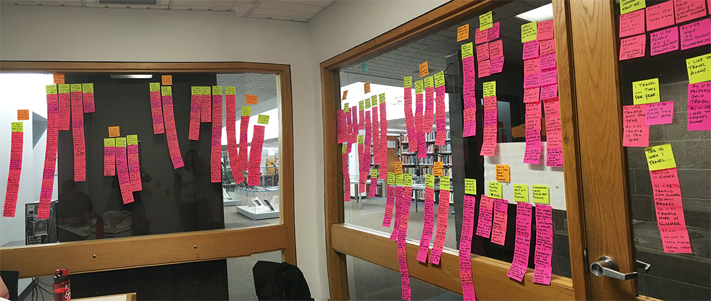
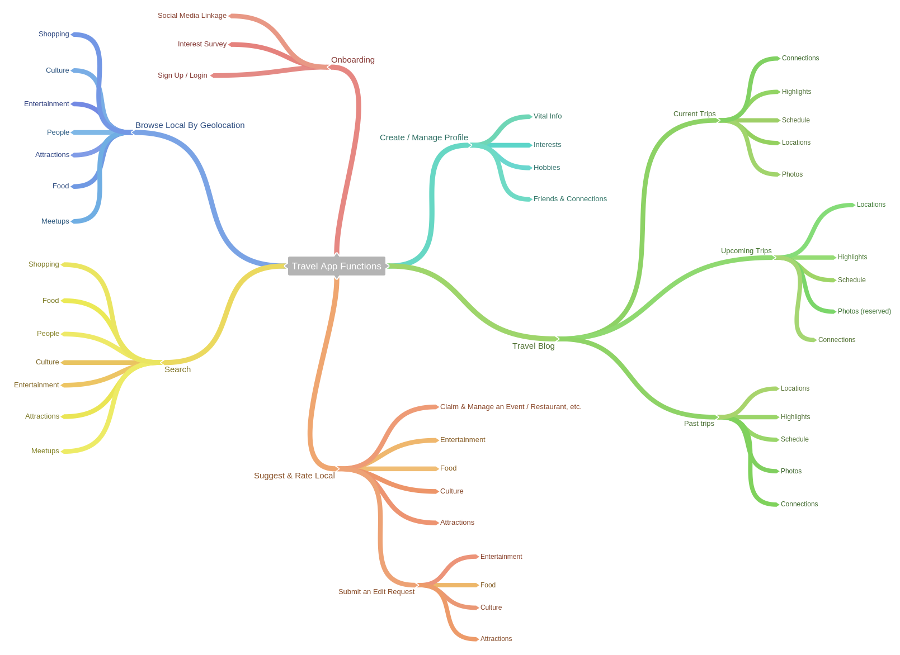

User Experience/User Interface Design
2016
Software
coggle.it · Axure
Skills Used
interviewing · affinity diagramming · persona creation · mind mapping · paper prototyping · hi-fi prototyping
For this four-person group project, we conceptualized and designed a mobile app that could be used as a travel companion.
Initially, we conducted interviews to understand how people used technology when they traveled: for planning a trip, during the trip, and after the trip. We combined all our interview notes from our 11 interviewees on individual post-its to create an affinity diagram. Once we found the natural groupings of our data, we used these categories as the focus points of our mobile app.
Based on our user research, we determined that we should develop a mobile app which provides users with the local flavor of the area they are traveling to. Many of our interviewees stated that they liked to experience the local culture and sought out activities to do based on information from locals. Apps like Google Maps and Yelp were helpful, but not quite the ideal tool for them. We envisioned our app to be a social network for travelers and locals who could share ideas about places, food, and events with one another.
From there, we developed personas to determine who our user base would be, and how our app could help fulfill their travel needs.
We then began to brainstorm app features. Initially, we created a mind map of our ideas to better plan out our app's structure.
From there, we generated a lo-fi prototype with paper and pencil. This gave us the ability to easily modify our UI design and ideas on the fly.
Once satisfied with our lo-fi prototype, we moved to developing a hi-fi prototype in Axure.